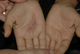
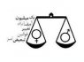
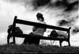
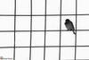
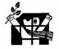
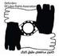
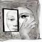
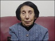
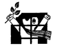

- 2 تیر 1388
- 18 خرداد 1388
برای این روزها
نفیسه آزاد
- 9 خرداد 1388
دردنامه
مهری حاضری( مادر کاوه مظفری)
- 5 خرداد 1388

به این تصاویر تلخ بنگرید
از زابل
- 30 اردیبهشت 1388
در حاشیه انتخابات
پرستو اللهیاری
- 24 اردیبهشت 1388

نقد و نظر
کامران طاهباز
- 17 اردیبهشت 1388
به بهانه دستگيري نيكزاد زنگنه
پويا عزيزي
- 13 اردیبهشت 1388

قانون تبعیض آمیز
سایت مهمان - روز
- 12 اردیبهشت 1388
کانادا
سایت مهمان - شهروند/فرح طاهری
- 8 اردیبهشت 1388

بهناز شکاریار
- 6 اردیبهشت 1388

قوانین تبعیض امیز- ارث
ارث برابر
- 27 فروردین 1388
حقوق زنان
کمپین بین االمللی دفاع از حقوق بشر در ایران
- 11 فروردین 1388

خودشان هم نمی دانند چرا ما را دستگیر کرده اند
یادداشت مردان بازداشتی
- 7 فروردین 1388
عید دیدنی
نسرین فرهومند
- 1 فروردین 1388
مصائب زن ایرانی خارج از ایران؛
آذر تبرستانی
- 28 اسفند 1387

تبعیض
ندا رستم پور
- 24 اسفند 1387
روزجهانی زن
محمود معتقدی
- 21 اسفند 1387
تو و من
سوزان مشهدی/برگردان احمد مزارعی
- 12 اسفند 1387

قانون تامین اجتماعی در خصوص زنان
سایت مهمان : کانون مدافعان حقوق کارگر- رقیه مرادی
- 30 بهمن 1387

اثر هنريِ معترض، جنبش اعتراضي و مخاطب
سیاوش خدایی
- 20 بهمن 1387
متن سخنرانی الهه امانی در " شب عشاء" در کالیفرنیا : رویاها را محکم بچسب
ترجمه نیلوفر انسان
- 14 بهمن 1387
نامه ای برای مخالفان
کریم پور حمزاوی
- 11 بهمن 1387
یک سال پس از بستن مجله زنان
سایت مهمان : دال / جستارها و گفتارهای حسین قاضیان
- 4 بهمن 1387
پدیده کمپین
پاریس ویدا سمایی
- 22 دی 1387
...
ستاره سجادی
- 16 دی 1387
یک سال اعمال فشار برشیرین عبادی مدافع شجاع حقوق بشر
آیدا سعادت
- 11 دی 1387

یکی دیگر از پیشکسوتان جنبش زنان پرکشید
زمانه
- 8 دی 1387
خودسوزی
شیما جعفرزاده
- 29 آذر 1387
در شصدمین سالروز روزجهانی حقوق بشر
- 18 آذر 1387

حقوق زنان در شصتمین سالروز حقوق بشر
حمید حمیدی